Curacautín · Ruta 181, km 17,5
Veinticinco metros de agua sobre basalto.
Cascada, camping, cabañas y restaurante a orillas del Cautín.
- 3.100reseñas en Google
- 4,8de nota promedio
- 25 mde caída sobre columnas de basalto
- 0páginas propias: todo pasa por Facebook
La pregunta antes de salir
¿Vengo por el día o me quedo?
Cuatro maneras de estar, en el mismo lugar.
- 01
Por el día
El salto, la poza y el bosque nativo.
- 02
A almorzar
Restaurante de comida casera.
- 03
A acampar
Una zona de camping amplia.
- 04
En cabaña
Equipadas, a orillas del Cautín.
Tarifas, horarios y temporada los confirma el centro.
El estero La Gloria cae al Cautín.
Geositio del Geoparque Kütralkura
Lo que hay en el lugar
-
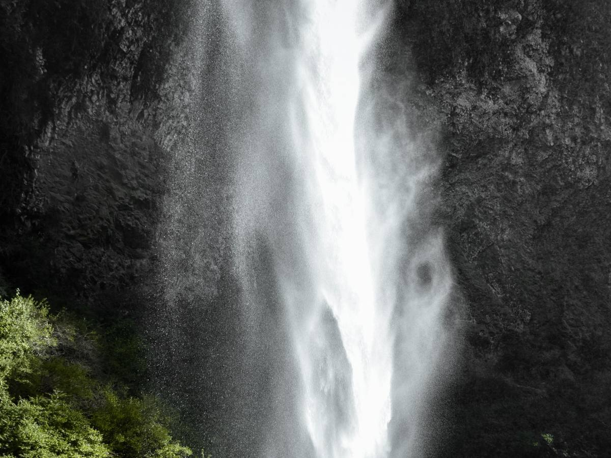
Veinticinco metros
El salto
Entre columnas de basalto.
-
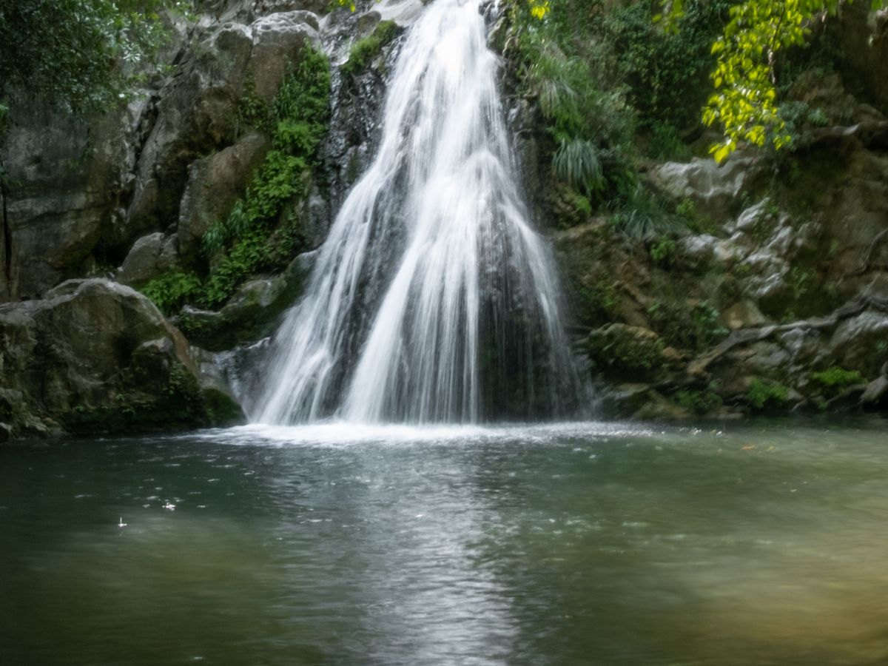
Abajo
La poza
Donde el agua se calma.
-
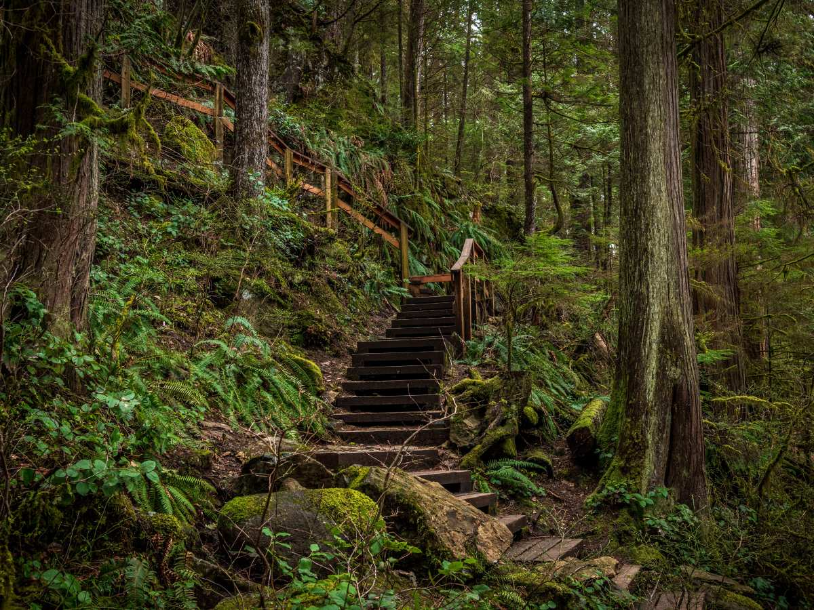
El acceso
El sendero
Entre vegetación nativa.
-
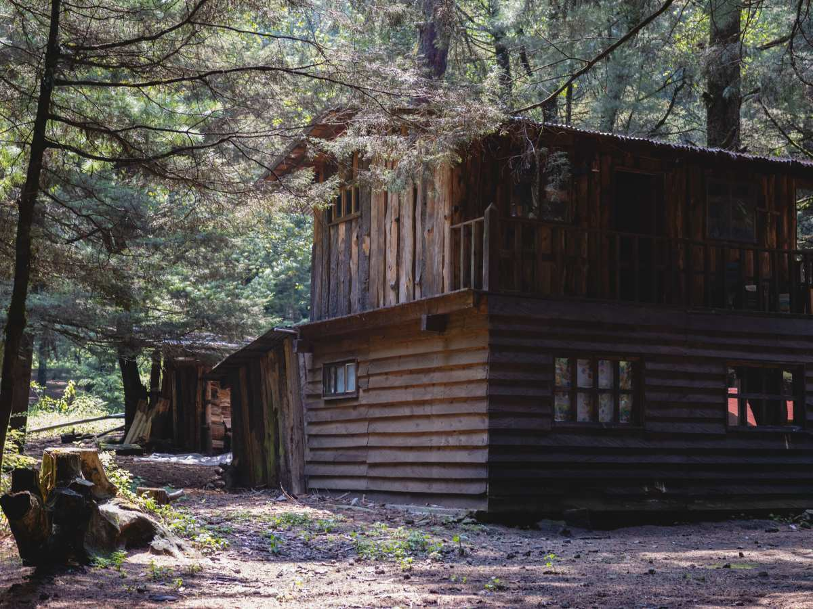
Junto al río
Las cabañas
A orillas del Cautín.
-
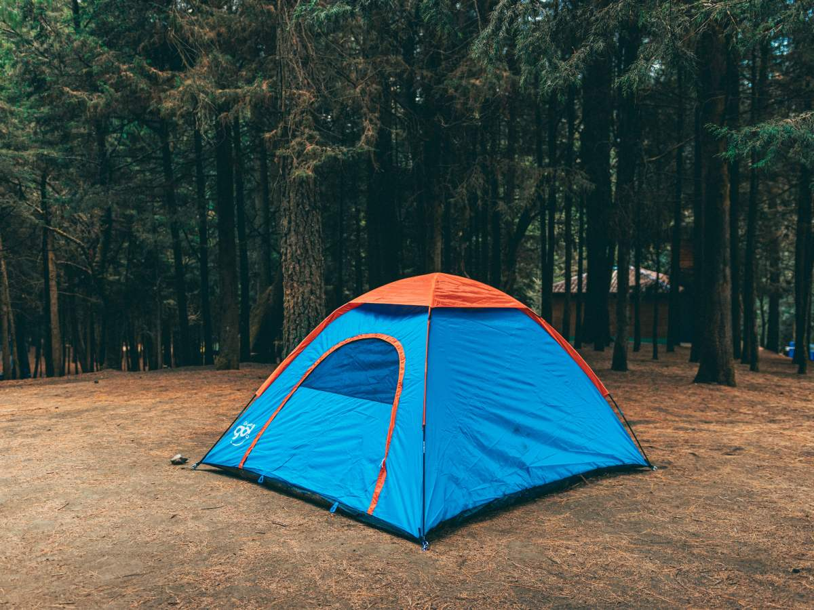
Bajo los árboles
El camping
Zona amplia para carpas.
-
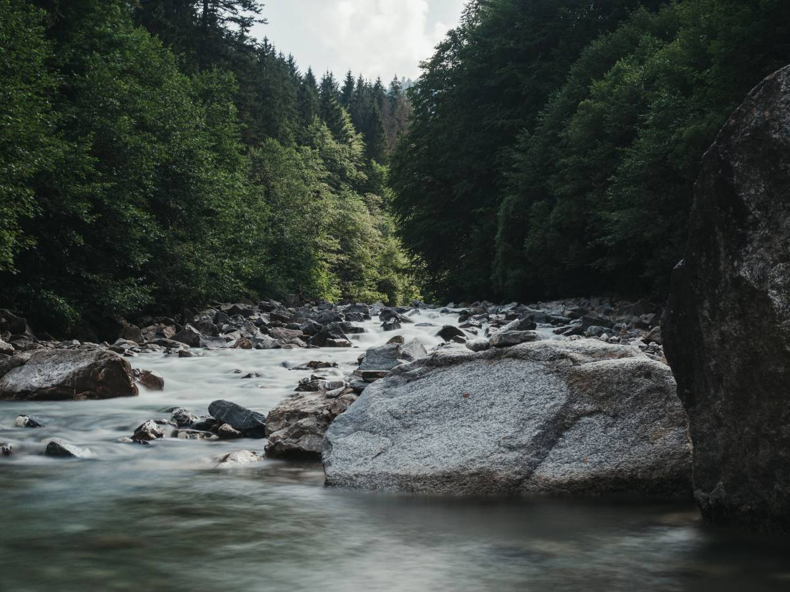
Donde cae el estero
El río Cautín
Recibe al estero La Gloria.
Las fotos no son del lugar: las de verdad las entrega el centro.
3.100 reseñas y un 4,8.
Contadas en Google
Agua, roca y bosque
Un día junto al salto
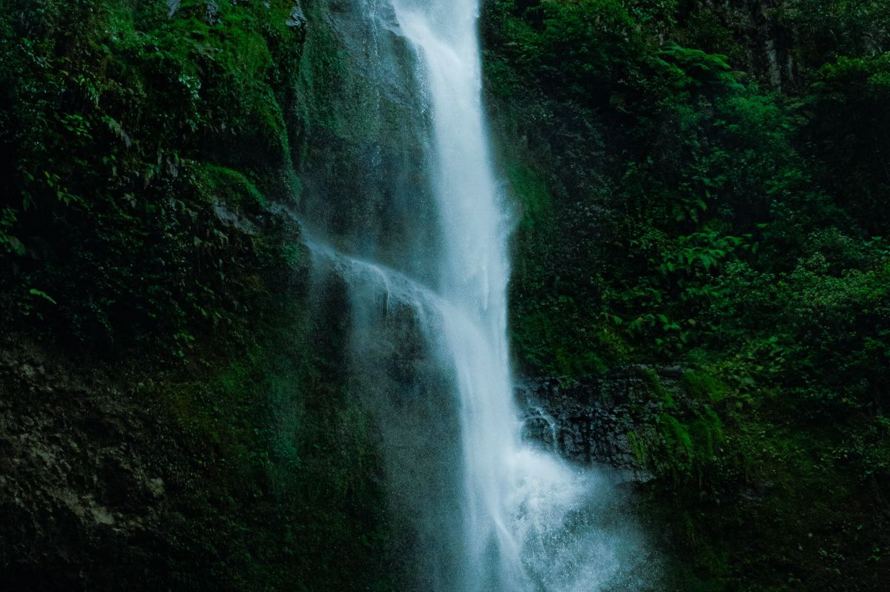
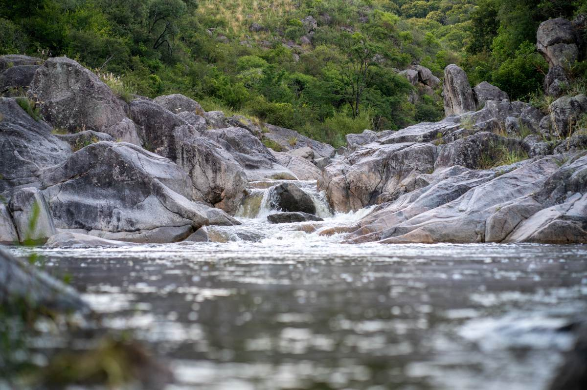
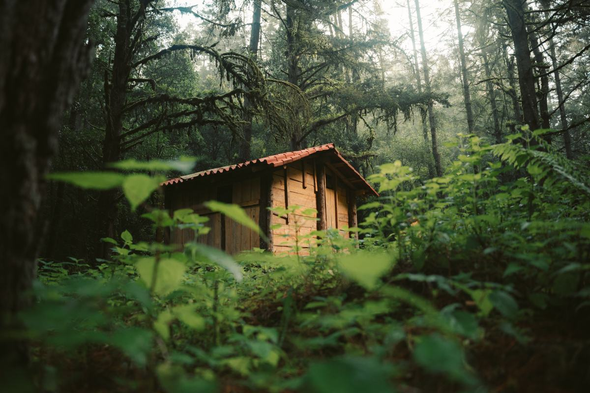
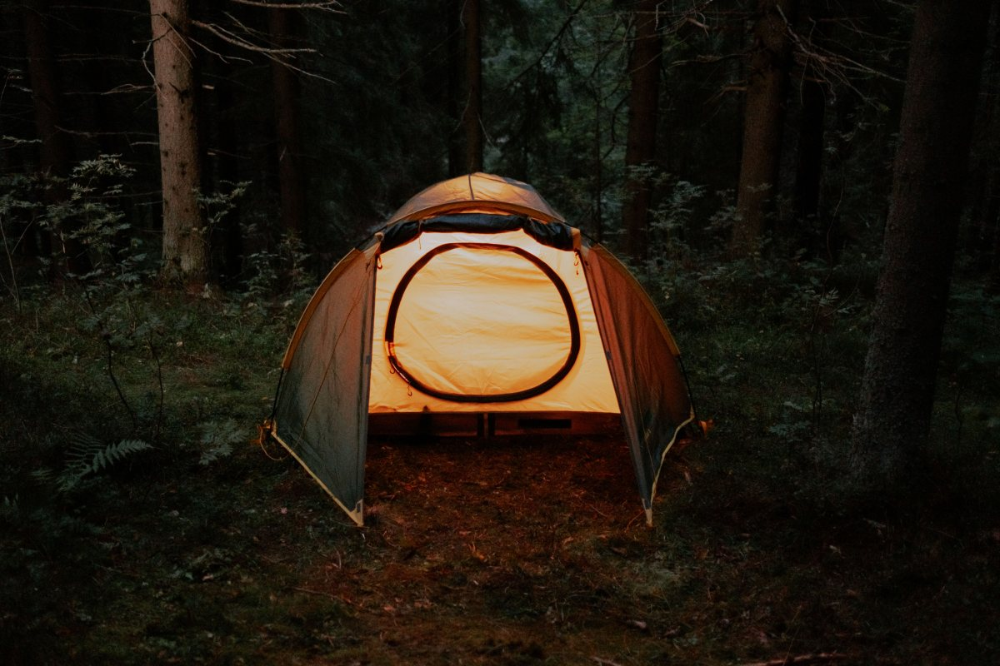
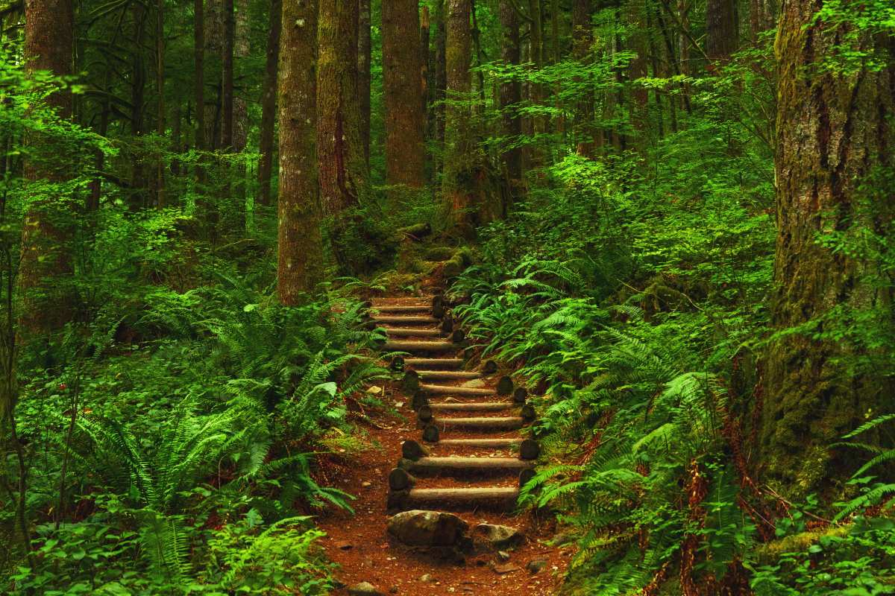
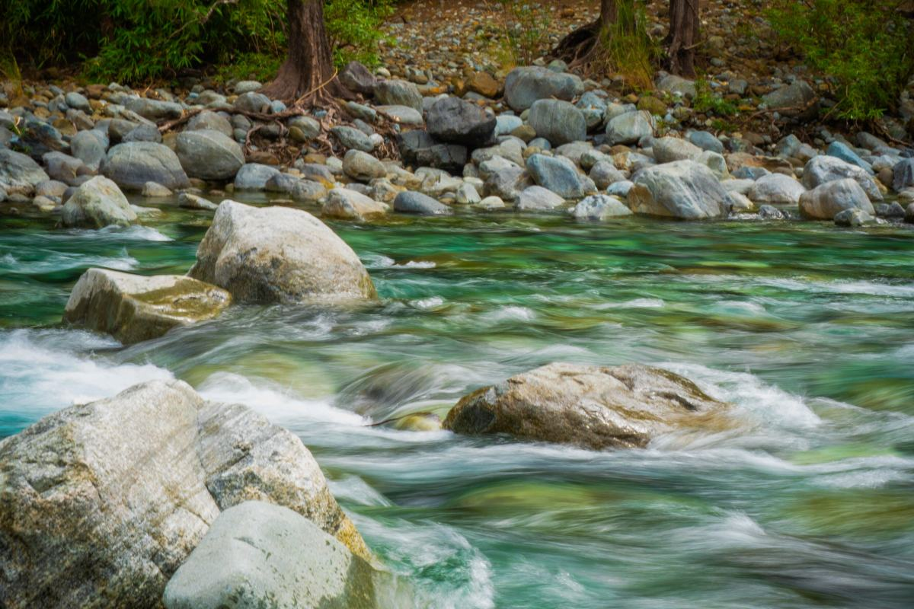
Fotos de referencia de agua, roca y bosque del sur.
Cómo llegar
Ruta 181, km 17,5, Curacautín
- Dirección
- Camino a Malalcahuello y Lonquimay
- +56 9 4267 8730
- Reseñas
- 3.100 en Google, nota 4,8
- Horario
- Falta el horario
A 17,5 km de Curacautín, por camino asfaltado.
Salto de la Princesa, Curacautín Abrir en Google Maps
Para el dueño
Qué es real y qué falta
Lo verificado
El nombre, el WhatsApp, las 3.100 reseñas con 4,8, el km 17,5 y los servicios que listan Kutralkura y Sernatur.
Lo de ejemplo
Las fotos, que son de referencia y no del lugar.
Lo que falta
Tarifas, horario y temporada. En Sernatur el registro figura no vigente, con otro número.